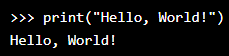

Python Indentation
Indentation refers to the spaces at the beginning of a code line.
Where in other programming languages the indentation in code is for readability only, the indentation in Python is very important.
Python uses indentation to indicate a block of code.Usually 4 spaces but at least 1
